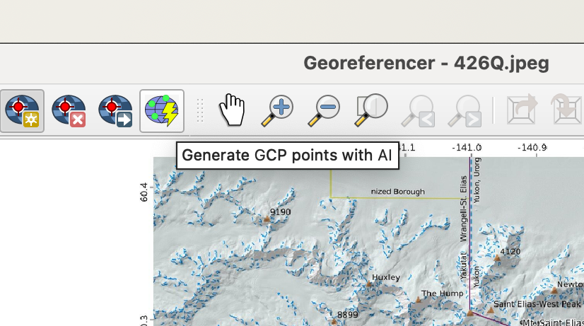

9 Автоматическая векторизация
9.1 Встроенные стредства QGIS
По умолчанию в QGIS есть инструмент преобразования растра в вектор, то есть автоматической векторизации.
Этот инструмент может быть запущен из строки меню Растр \(\longrightarrow\) Преобразование \(\longrightarrow\) Создание полигонов (растр в вектор).

С документацией можно ознакомиться по ссылке.
Пример работы автоматического векторизатора показан ниже.
Так как автоматическая векторизация здесь осуществляется фактически только по цвету пикселей вашего растра, то идеальным случаем для векторизации будут большие полигоны с равномерной заливкой и без контура, в других случаях вы можете получить слишком много маленьких полигонов, которые будут требовать дополнительной проработки и объединения.
Также следует отметить, что полученные полигоны не будут иметь гладкие и ровные стороны, а будут своеобразными “лесенками”, в силу того, что пиксели напрямую преобразовываются в объекты.
9.2 Модуль Bunting labs AI
Страница модуля: https://plugins.qgis.org/plugins/buntinglabs-qgis-plugin/
Сайт модуля: https://buntinglabs.com/solutions/ai-vectorizer-qgis-plugin
Репозиторий с кодом: https://github.com/BuntingLabs/buntinglabs-qgis-plugin
В январе 2024 года компания Bunting Labs выпустила плагин для QGIS Bunting Labs AI Vectorizer, который помогает оцифровывать растры, продолжая линии, начатые пользователем. Разработчики называют это “автозаполнением”, потому что плагин не делает всю работу сразу, а дорисовывает части линий на основе контекста, оставляя пользователю возможность в любой момент перехватить контроль.27
Плагин AI Vectorizer работает так: когда пользователь начинает отрисовывать векторный объект, модель “смотрит” на его действия и продолжает эту линию, независимо от ее значения.
Пользователь начинает оцифровывать линию или полигон по растру, и как только есть первые две вершины, маленький кусочек карты отправляется на сервер. Модель “смотрит” на нарисованный на карте отрезок и выбирает пиксели, по которым должны проходить следующие вершины, после чего плагин дорисовывает 50 следующих точек линии. Этот процесс подходит для любых линий, даже для пунктирных и тех, которые пересекают другие похожие объекты. А если плагин собьется с пути, можно просто отменить последний шаг и не терять при этом много времени.
Перед работой необходимо зарегистрировать аккаунт по ссылке. После этого вам на указанную в форме электронную почту придет письмо для активации аккаунта.
Далее следует установить модуль Bunting Labs AI Vectorizer.
Судя по всему модуль теперь работает бесплатно только в течение 30 дней с момента активации работы с ним.
Также в модуль входит сервис привязки с использованием искусственного интеллекта https://buntinglabs.com/solutions/ai-georeferencer.

В качестве бесплатной альтернативы можно воспользоваться модулем Raster tracer.

Краткую инструкцию по работе с модулем можно прочитать по ссылке или посмотреть видео.
Этот модуль работает только для линейных объектов, но при необходимости контура можно впоследствии преобразовать в полигоны.

Плагин для AI-оцифровки растров в QGIS - https://cartetika.ru/tpost/4dta8sa621-plagin-dlya-ai-otsifrovki-rastrov-v-qgis↩︎